The Language of Fashion
Fashion is much more than clothing. It is a creative industry and a form os self-expression that reflects culture, identity and society. Fashion combeines art, design, craftsmanship and buisness, allowing people to communicate their individuality through what they wear.
Fashion is about creating something meaningful, beautiful and unique, while combining undestending of the person who will wear it.Fashion is a way expressing who we are without saying a word.
Fashion speaks through shapes, colors, and textures. It transforms ordinary moments into visual stories and gives individuality a distantive form. Style is not about following every trend-it is about discovering your own voice and expressing it with confidence.
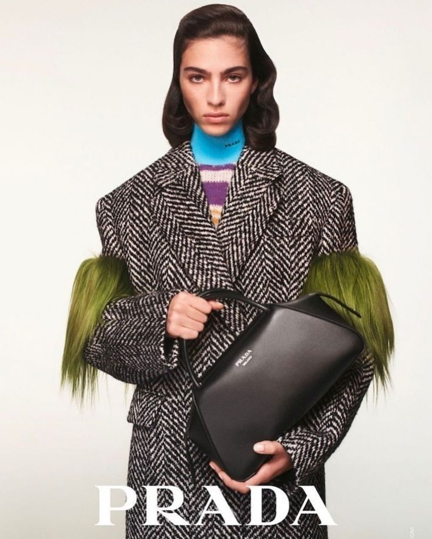
Prada Group is a global leader in luxury, with a thoughtful and pioneering vision. We own some of the world’s most prestigious brands: Prada, Miu Miu, Church’s, Car Shoe, Versace, Marchesi 1824 and Luna Rossa. We offer an unconventional dialogue and interpretation of the contemporary, as expression of our way of doing business for PLANET, PEOPLE and CULTURE. Curiosity, passions, intuitions: Prada Group’s special projects represent one of the preferred expressive languages to depict its universe, conveying its values and its vision in a relentless involvement of unique talents and experiences. Read more
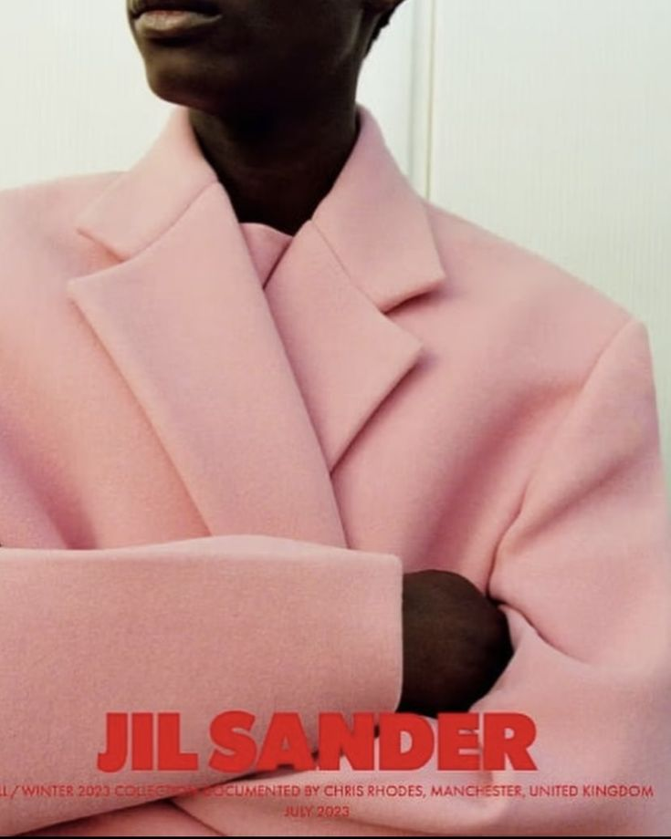
Jil Sander is a luxury brand dedicated to modern design and innovation. It defines the wardrobe of women and men fusing elegance and functionality, invention and purity of form, and exceptional craftsmanship with the most refined materials and advanced production techniques. Jil Sander’s approach to fashion is defined by the search for a long-lasting style executed with exceptional craftsmanship and innovative materials, reverberating modern design.Launched in 1968 by Jil Sander, the fashion house presented its first women’s collection in Hamburg in 1973.
Read more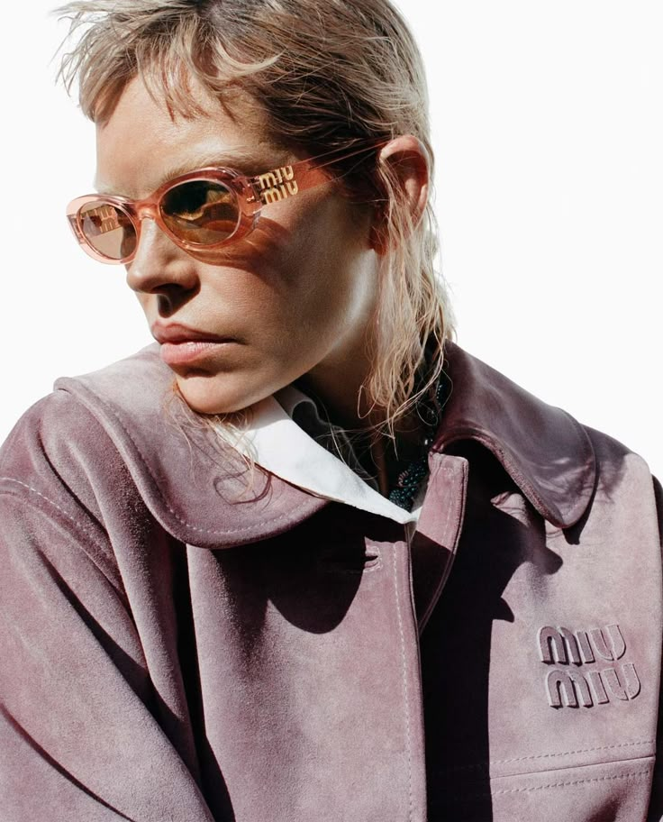
Miu Miu Upcycled Launched in 2020, Miu Miu Upcycled is a project presenting a series of special collections created from vintage pieces, carefully sourced worldwide and reinterpreted with the aim of promoting circular design practices. Across its editions, the project has introduced drops and collaborations that reinterpret the Miu Miu wardrobe through a contemporary lens, fostering a culture of sustainability by giving new life to pre-owned and pre-loved pieces. Miu Miu has also partnered with the Aura Blockchain Consortium, allowing each item in the collection to be digitally verified. Read more
Fashion Campaignes
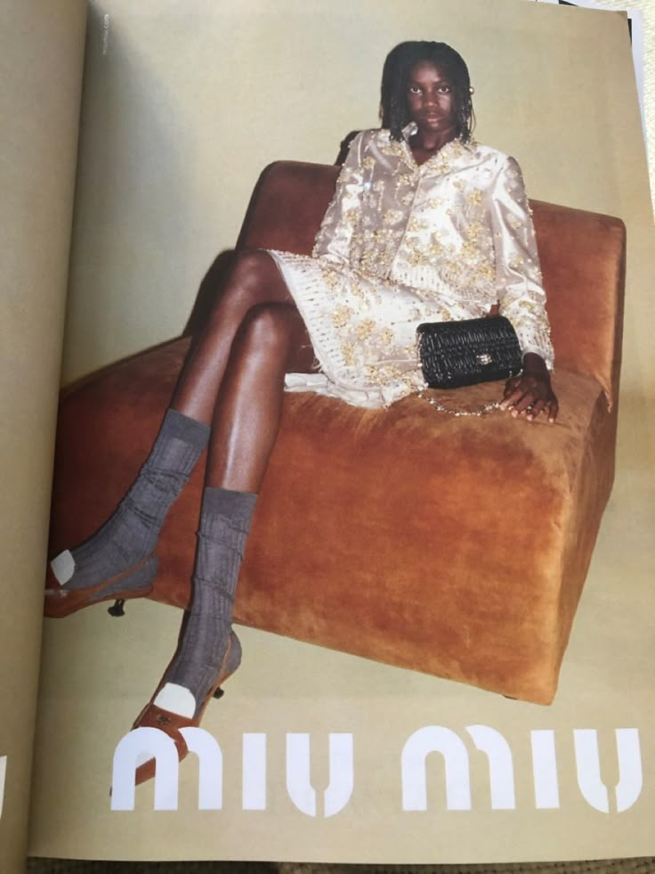
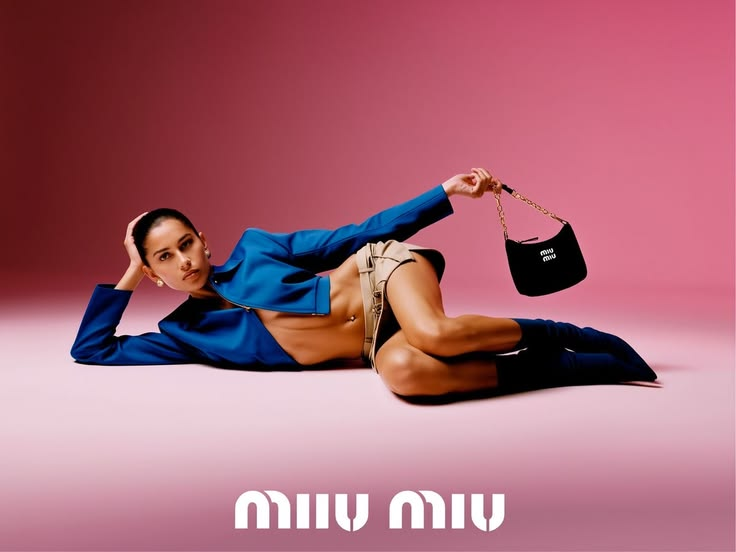
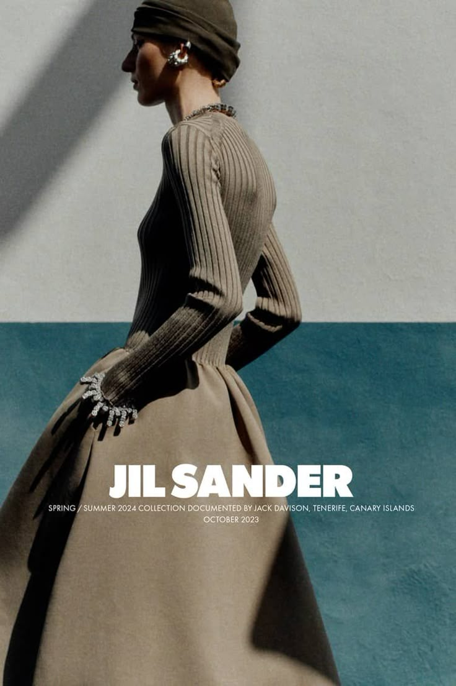
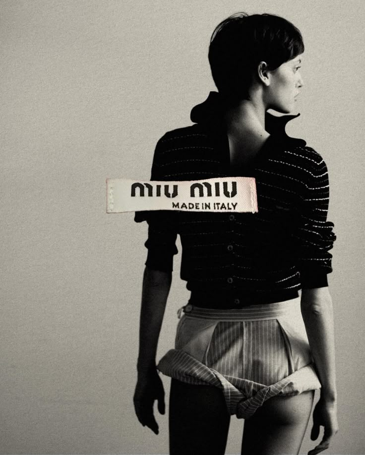
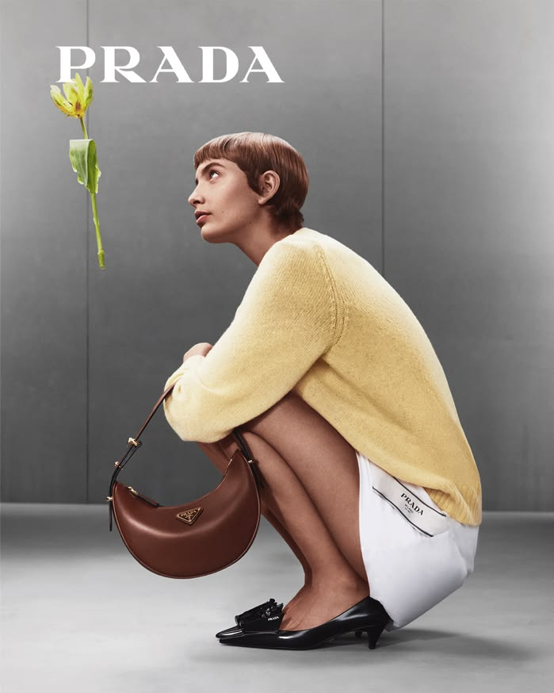
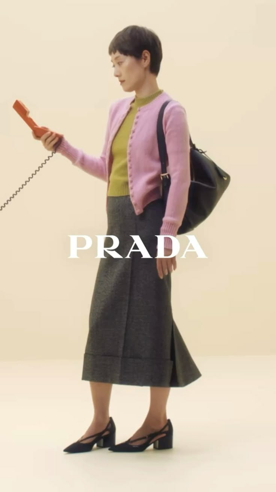
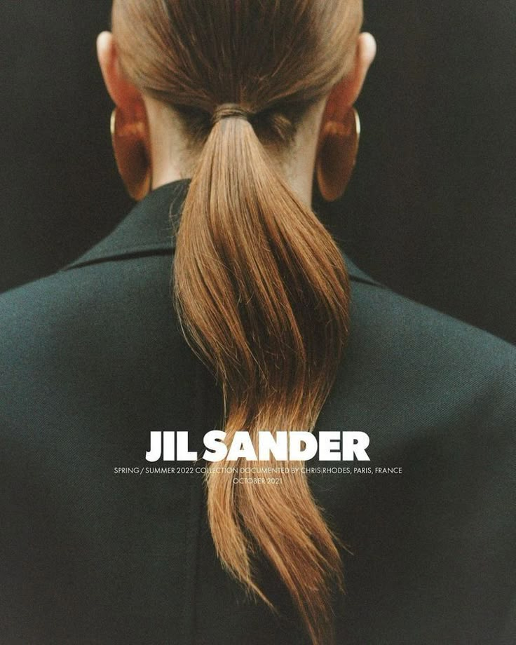
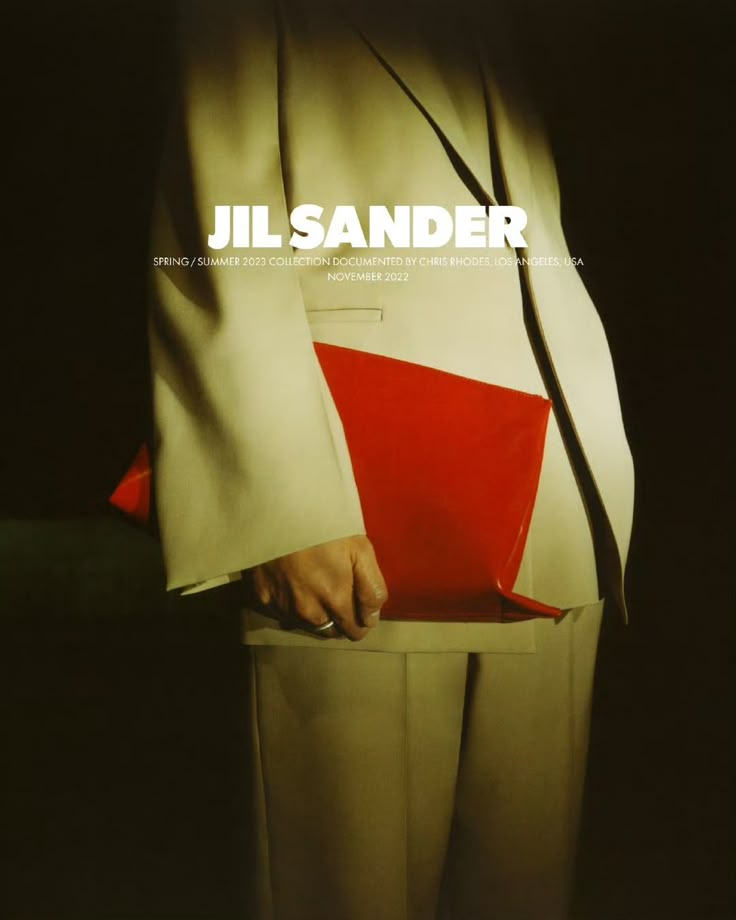
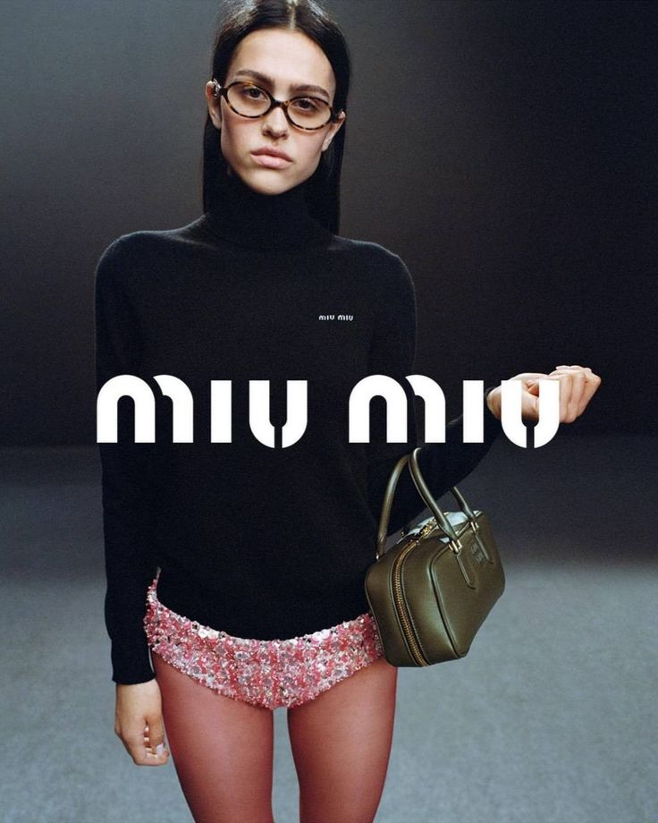
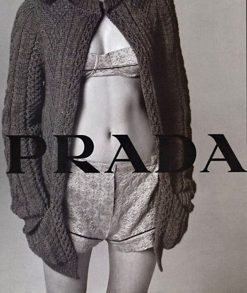
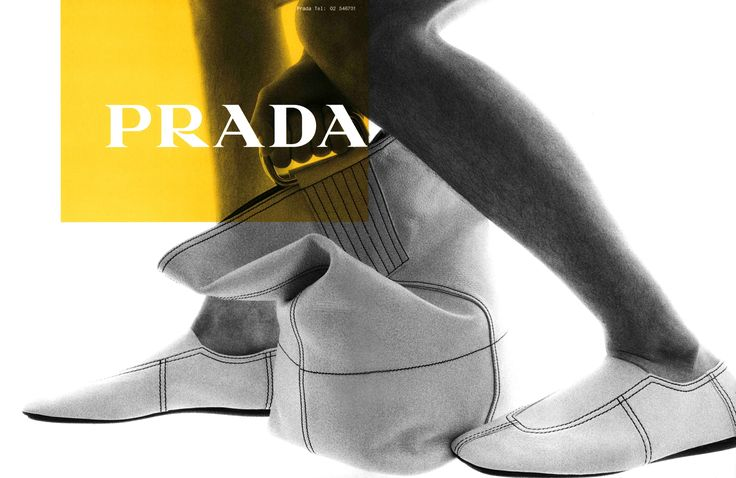
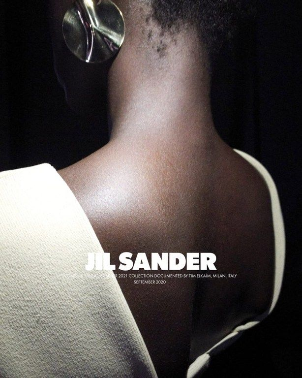
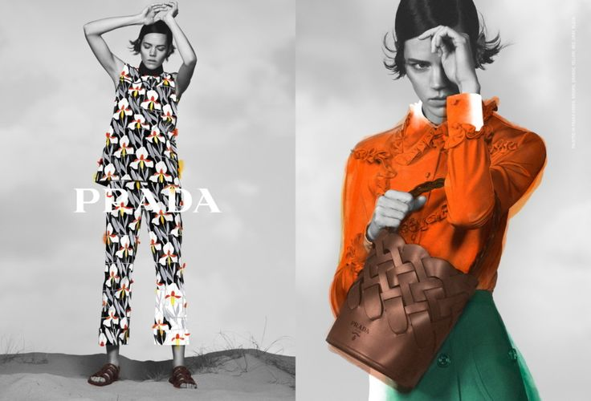